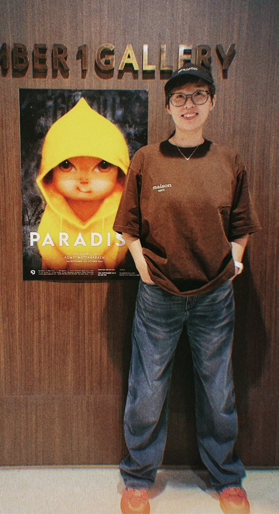

10年
品牌视觉 20+
大型活动 VI / KV 视觉传达
设计 Ps / Ai / Id AI + 设计 版面设计 包装创意
设计 活动策划
品牌视觉 20+
大型活动 VI / KV 视觉传达
设计 Ps / Ai / Id AI + 设计 版面设计 包装创意
设计 活动策划
余浣 Hannah
资深视觉设计师
从品牌视觉体系到活动现场，
覆盖策划、设计与执行。
10年国企品牌视觉体系建设
20+大型活动全案
8家子公司 VI 系统应用

余浣 Hannah · 视觉设计师
关于我 / ABOUT ME
让设计和生活，
都多一点意思。
我喜欢观察日常，也喜欢把想法做成真的。做品牌、活动和内容视觉时，我在意画面有没有性格，更在意它能不能讲清楚一件事、真正落到现场。换过城市，也换过工作方式，我依然愿意学新工具、试新表达。认真做事，保持好奇。
查看完整简历 PDF ▸专业技能 / SKILLS
视觉设计能力
视觉设计
VI · 版面设计 · 包装创意设计
营销设计
KV主视觉 · 详情页优化 · 公众号长图 · 活动周边延展
设计工具
管理协作
供应商全流程管理 · 跨部门协同 · 设计规范制定
SELECTED WORKS
精选项目
工作经历 / EXPERIENCE
工作经历
- 自由职业阶段
- 自由职业 / 家庭陪伴
AI应用 · 跨文化审美 · 内容创作
- 中南建筑设计院股份有限公司
品牌视觉体系 · 企业 VI · 20+ 集团级活动
- 职业探索期
电商全流程
- 游戏视觉设计
UI · 2D美术
联系方式
联系余浣
发送邮件 ▸余浣 Hannah首页
余浣 / HANNAH